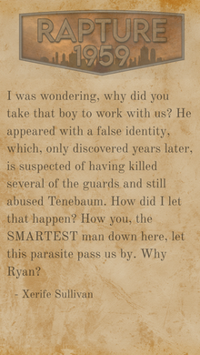

Dossiê: Rapture, 1959
ARQUIVORegistro histórico do período final de estabilidade em rapture, incluindo contexto político, social e arquitetônico.
AVISO: instalar winRAR para interagir com os arquivos

Guardado a 7 chaves
Registro histórico do período final de estabilidade em rapture, incluindo contexto político, social e arquitetônico.
AVISO: instalar winRAR para interagir com os arquivos
